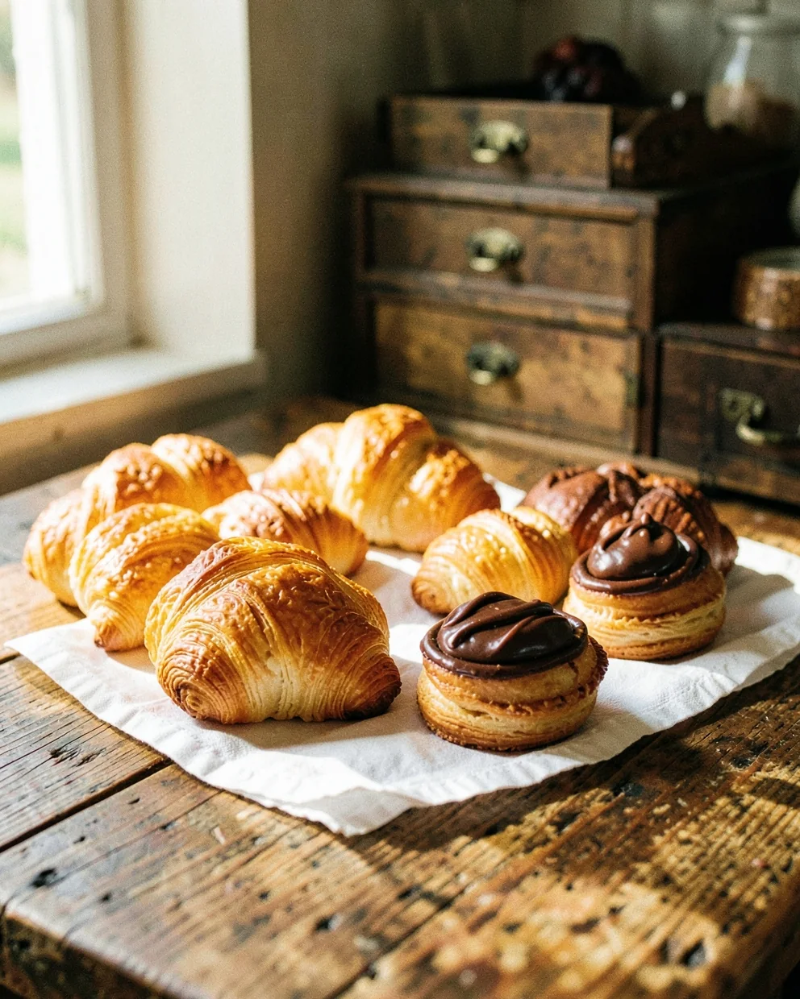

Il desiderio di un momento dolce
Molti cercano un luogo dove gustare un dolce autentico, ma spesso si imbattono in catene senza carattere e sapori artificiali. Vuoi un’esperienza che unisca qualità, tradizione e un ambiente raffinato?

La nostra risposta
Esperienza completa
Dalla colazione al brunch, dal caffè al dolce su misura, ogni proposta è preparata con ingredienti selezionati e passione artigianale.
- 01Ingredienti locali e stagionali
- 02Ricette tramandate da generazioni
- 03Ambiente luminoso vicino al Duomo
Il nostro pacchetto
Menu degustazione
Un percorso di sapori con selezione di dolci, caffè e brunch, ideale per gruppi e occasioni speciali.
- Assortimento di 5 dolci tipici
- Caffè specialty
- Brunch domenicale
- Servizio tavolo dedicato
su preventivo
Prezzo personalizzato in base al numero di partecipanti
Richiedi un preventivoPerché sceglierci
Qualità garantita
Ingredienti locali
Clienti soddisfatti
Anni di tradizione
La nostra reputazione
Feedback reale
Media recensioni
Recensioni online
Prenota ora il tuo tavolo
Assicurati un posto nel cuore di Milano e vivi un’esperienza dolciaria unica.
Domande frequenti
Info utili
Quali sono gli orari di apertura?
Dal lunedì al sabato, dalle 08:00 alle 20:00.
Accettate prenotazioni per gruppi?
Sì, consigliamo di prenotare con almeno 48 ore di anticipo per gruppi superiori a 6 persone.
Offrite opzioni senza glutine o vegane?
Sì, disponiamo di dolci e brunch senza glutine e vegani su richiesta.
È possibile organizzare eventi privati?
Il bistrot è disponibile per feste private, compleanni e meeting aziendali.